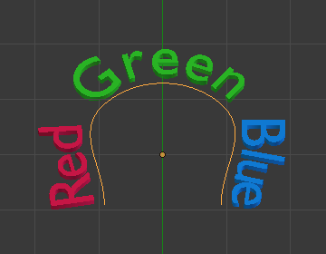

Properties¶
Shape¶
Reference
| Mode: | All Modes |
|---|---|
| Panel: |
Most of the settings in the Shape panel are shared with those of Curves data-blocks, please refer to those for details.
- Fast Editing
- Does not fill the letters in Edit Mode, only show their outline.
Texture Space¶
Each Object can have an automatically generated UV map, these maps can be adjusted here.
See Generated UV Properties for more information.
Geometry¶
Reference
| Mode: | All Modes |
|---|---|
| Panel: |
- Offset
- Offset the control points of the curves defining the letters, which will make them thinner or thicker. Use with care, it can quickly lead to artifacts…
Extrusion, Taper & Bevel¶
The remaining settings of that panel, which are used to give volume to the letters, are also shared with the Curves data-blocks, please refer to those for details.
Note
How the Taper object effect works depends on how the curves defining the letters are built. The results can often look quite random…
Note
Bevel is applied to the curves defining the letters, which means that usually it will follow their outlines (there will be two parallel beveled curves, and not a single one, as one might expect).
Font¶
Reference
| Mode: | All Modes |
|---|---|
| Panel: |
- Bold
- Toggled with the Bold button before typing. Text can also be set to bold by selecting it then using the Bold entry in the Text menu of the 3D View.
- Italics
- Toggled with the Italic button before typing. Text can also be set to italic by selecting it then using the Italic entry in the Text menu of the 3D View.
- Underline
- Enables underlining, as controlled by the underline settings below.
- Small Caps
Enable this option to type characters as small caps.
The size of the Small Caps can be changed with the Small Caps Scale setting.
Transform¶
- Size
- Controls the size of the whole text (no way to control each char size independently). Note however, that chars with different fonts (different styles, see below) might have different visible sizes.
- Shear
Controls the inclination of the whole text. As similar as it may seem, this is not the same thing as italics style.

Shear example.
- Object Font
Allows individual objects to be used to render fonts, you can create/model your own complex font inside Blender! This field is used to select the objects prefix name (object “family”) to be used to locate the individual characters used for typing. This is quite a complex process, so here are detailed steps to follow:
- Create the font characters, each character can be any object type (mesh, curve, etc.). They must all have a name following the naming schema: “common prefix” followed by the “character name” (e.g. “ft.a”, “ft.b”, etc.).
- For the Text object, enable Instancing Vertices.
- In the Font tab, fill the Object Font field with the “common prefix” of your “font” objects. Now, each time a character in your text matches the suffix part of a “font” object’s name, this object is duplicated on this character.
Note
The objects are duplicated so that their center is positioned at the lower right corner of the corresponding characters.
- Text on Curve
Select a curve object for the text object to follow.
Text on curve.
Tip
You should rather use the Curve modifier, which offers more control, and is the standard way to achieve such effects in modern Blender.
{kind=link}
- Underline
- Toggled with the Underline button before typing. Text can also be set to Underlined by selecting it then using the Underline entry in the Text menu of the 3D View.
- Underline Position
- This allows you to shift vertically the position of the underline.
- Underline Thickness
- This controls the thickness of the underline.
- Small Caps Scale
- The scaling applied to capital letters to turn them into small caps.
Paragraph & Text Boxes¶
Those panels control the general layout of the text in the object.